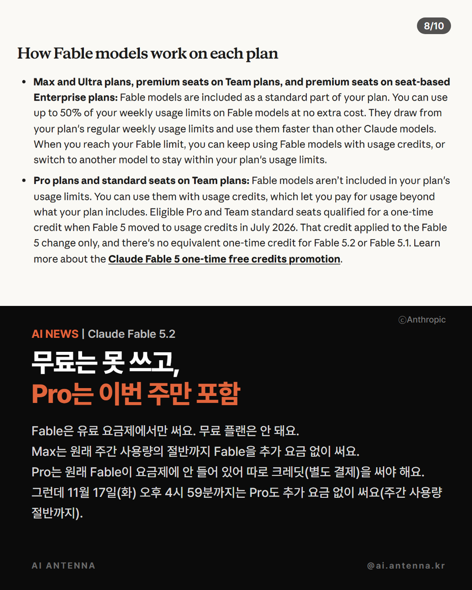
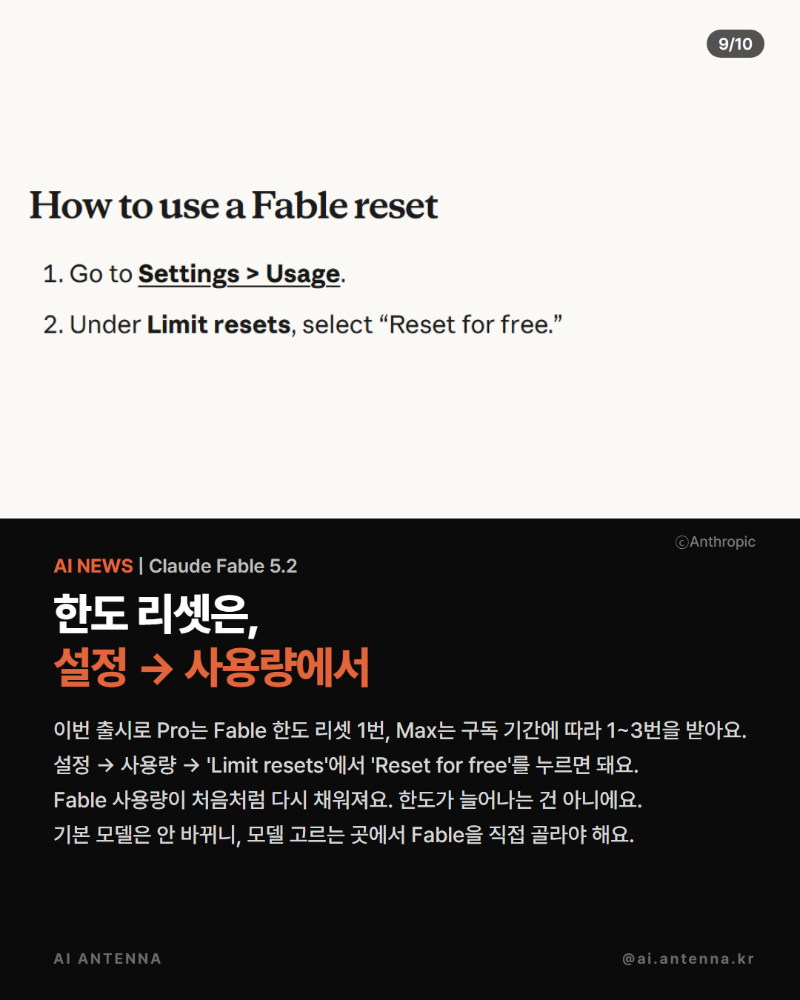
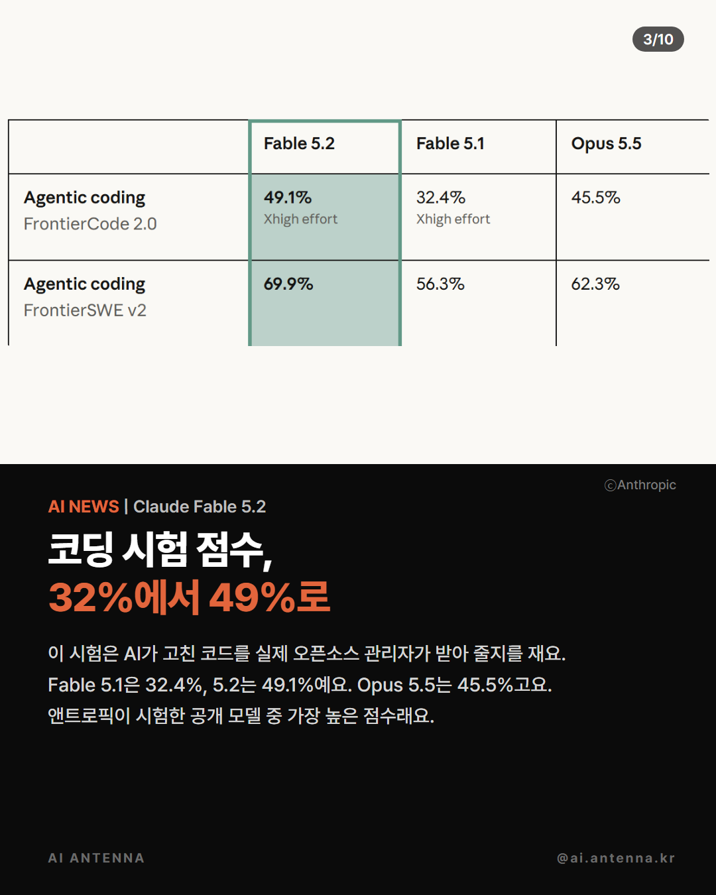

Claude 고객센터 공식 안내 기준이에요. 앤트로픽이 11월 9일 새 모델 Claude Fable 5.2를 내놓으면서 유료 구독자에게 이번 주 혜택을 줘요. Pro는 11월 17일(화) 오후 4시 59분(한국 시각)까지 Fable을 추가 요금 없이(주간 사용량의 절반까지) 쓰고 Fable 한도 리셋 1번을 받아요. Max는 구독 기간에 따라 리셋 1~3번(2027년 3월 9일 오후 4시 59분까지). 무료 플랜은 해당 없어요. 아래에 받는 사람·누르는 곳·주의할 점을 모았어요.
혜택이 생겨도 기본 모델은 그대로예요. 대화창의 모델 고르는 곳에서 Fable 5.2를 골라야 Fable로 답해요. Fable은 다른 모델보다 사용량이 빨리 닳아요.

claude.ai 설정의 사용량(Usage) 화면에 'Limit resets' 칸이 있고, 거기서 'Reset for free'를 누르면 리셋이 쓰여요. 화면 언어를 한국어로 쓰면 이름이 다르게 보일 수 있어요 — 사용량 화면의 리셋 칸을 찾으세요. 한 번 누르면 되돌릴 수 없어요.

리셋은 한도를 늘려 주는 게 아니라 Fable 주간 사용량을 다시 채워 줘요(다른 모델 사용량은 그대로, 5시간 한도가 있는 계정은 그 창도 다시 채움). 한도가 다 차기 전에도 누를 수 있지만, 남은 게 많을 때 누르면 그만큼 손해예요. Fable 사용량이 거의 찼을 때 누르세요.
Pro 일주일 포함·Pro 리셋: 11월 17일(화) 오후 4시 59분까지. Max 등 구독 기간 리셋: 2027년 3월 9일(화) 오후 4시 59분까지. 원문은 태평양 표준시 11월 16일·2027년 3월 8일 밤 11시 59분이에요.

받는 사람·누르는 곳·주의
https://support.claude.com/en/articles/17506494-claude-fable-5-2-launch-offers
성능·기기·운영체제·로봇
https://www.anthropic.com/claude-fable-and-mythos-5-2
기판·케이스를 어떻게 그렸나
https://www.anthropic.com/research/claude-electronics-design
도움이 되셨다면
@ai.antenna.kr
에서 바로 쓰는 AI 활용법을 계속 올립니다.